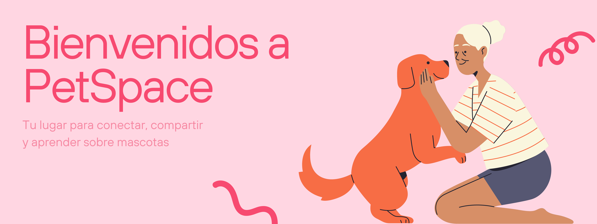
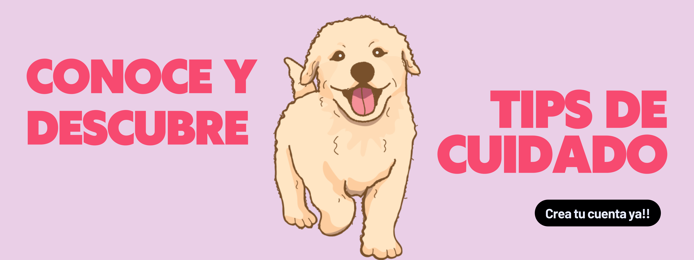

Somos una comunidad apasionada por el amor y cuidado de las mascotas, creada para conectar a personas que comparten el mismo cariño y compromiso hacia sus animales. En PetSpace, creemos que cada mascota tiene una historia única y entrañable que merece ser contada, por eso ofrecemos un espacio donde puedes capturar y compartir esos momentos especiales con otros amantes de los animales.
Nuestra misión es no solo proporcionar una plataforma para celebrar a nuestras mascotas, sino también promover prácticas responsables de cuidado y bienestar. Queremos ayudarte a cuidar y comprender mejor a tu mascota mediante el intercambio de consejos, experiencias y conocimientos entre la comunidad. Creemos que, juntos, podemos mejorar la vida de nuestras mascotas y construir un mundo más consciente y amoroso hacia los animales.
Una organización enfocada en el rescate y la adopción responsable de perros en situación de abandono.
Visitar WUFRefugio y hogar para perros discapacitados, con programas de adopción responsable y cuidados especiales.
Visitar Milagros PerrunosPromueven la adopción de perros y gatos, además de campañas de esterilización y concientización.
Visitar Animalistas Sin FronterasDedicados al rescate y cuidado de gatos y perros en situación vulnerable, promoviendo la adopción responsable.
Visitar Huellitas FelicesAsociación que rescata animales en riesgo y promueve la adopción, el respeto y cuidado hacia ellos.
Visitar Amigos de los Animales Perú